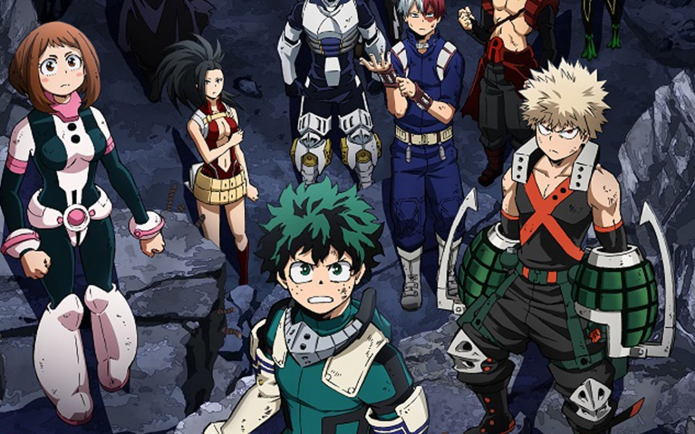

SHOTO TODOROKI
Quirk: Mitad frío, mitad caliente
Cumpleaños: 11 de enero
Alias: Shoto
Todoroki es el hijo del héroe No. 2 en la clasificación oficial, conocido como Endeavor. Nacido de un matrimonio por conveniencia para mezclar habilidades entre sí, el joven es el "experimento" perfecto para su padre, que buscaba crear un balance entre su habilidad, la llama infernal, y la de su esposa, que era un quirk de hielo. Gracias a esto, la mitad de su cuerpo puede encenderse como una llama y ser utilizada también como proyectil, mientras que la otra mitad puede crear estructuras de hielo controladas e incluso lluvias de carámbanos.
Shoto se mantiene relativamente frío con Endeavor y ha dejado en claro que el perdón por su trato anterior hacia él y su madre es difícil, pero ha demostrado preocupación por la seguridad de su padre. Ahora que Endeavor intenta mejorar su relación con su familia, Shoto ha adoptado un enfoque cauteloso pero esperanzador para este desarrollo.
Shoto es un joven bastante alto, bastante musculoso, bien formado para su edad. Tiene el pelo bastante largo, aunque no le pasa el cuello y usa flequillo, dividido dos veces para no oscurecer su visión. Su cabello está dividido uniformemente entre dos colores: blanco en su lado derecho y rojo carmesí a su izquierda, este color inusual se debe a su peculiaridad. Como otro resultado de esto también posee heterocromía iridio, lo que hace que el iris de su ojo izquierdo parezca turquesa, mientras que el derecho es un gris oscuro algo marrón. Sus ojos son bastante delgados y reservados y también tiene una gran cicatriz de quemadura en el lado izquierdo de la cara, que se extiende desde la línea del cabello hasta la mitad de la mejilla. A pesar de esto, sin embargo varias de las chicas de su clase han afirmado que es guapo, Mina Ashido incluso llegó a decir que es el tipo más guapo de la Clase 1-A.
OCHACO URARAKA
Quirk: Levitación
Cumpleaños: 27 de octubre
Alias: Uravity
Uraraka es una de las primeras personas que le muestra amabilidad a Midoriya cuando llega a la academia UA, y gracias a ella, pudo demostrar sus tendencias heroicas al sacrificar su puntaje para salvarle la vida. Debido a este suceso, Uraraka se vuelve una gran amiga del chico y comienza a admirar su voluntad y ganas de salir adelante. Su habilidad consiste en hacer objetos y personas flotar cuando los toca. Incluso, puede flotar ella misma, pero suele sufrir de mareos.
Ochaco también está muy inspirada por sus compañeros de clase, especialmente Izuku, a quien considera admirable tanto por su fuerza como por su compasión. Ochaco se ha enamorado de él debido a esto y su amistad cercana, lo que resulta en sus intentos de seguir su ejemplo, para bien o para mal. Mientras él la inspira, Ochaco también reconoce que el heroísmo tiene prioridad sobre sus sentimientos románticos, y hace todo lo posible para continuar creciendo mientras los mantiene bajo control. Izuku Midoriya también la ha llevado a considerar la cuestión de quién protege a los héroes cuando los necesitan, ya que continuamente se arroja a situaciones peligrosas; Esto muestra de manera prominente cuán profundamente se preocupa Ochaco por él y por los demás.
Ochaco es una chica bajita de complexión delgada pero femenina. Ella es de piel clara con un sonrojo perpetuo en sus mejillas. Sus ojos son grandes y redondos, su cabello es de color marrón cálido con pestañas superiores bastante gruesas, dos más largas y prominentes que sobresalen hacia afuera a cada lado y menos pestañas inferiores, pero más pronunciadas individualmente.